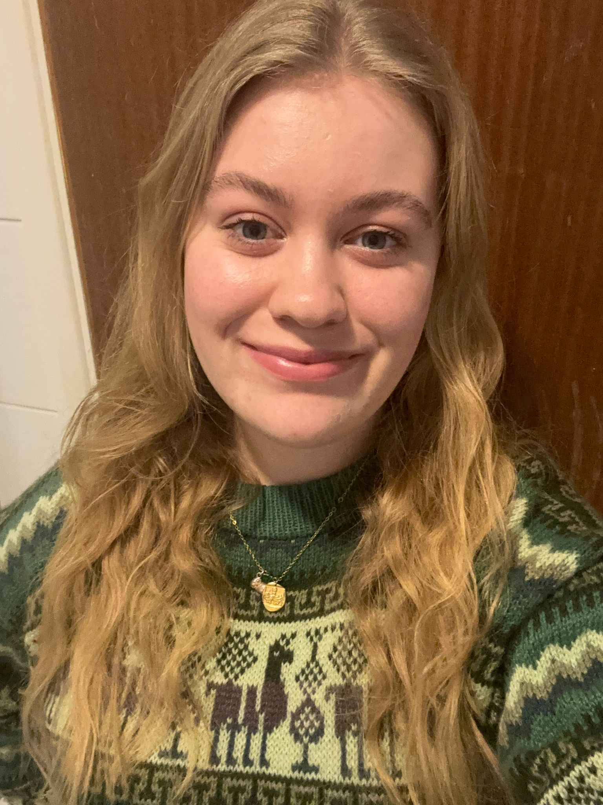
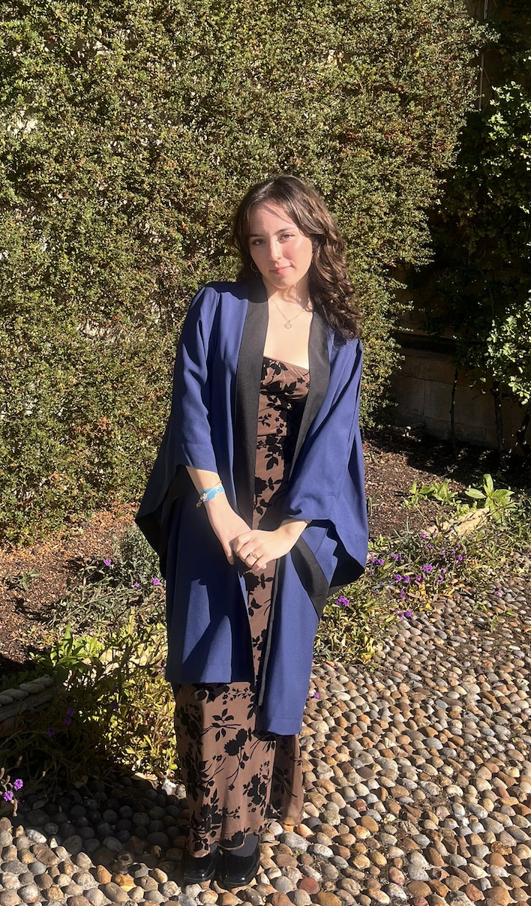
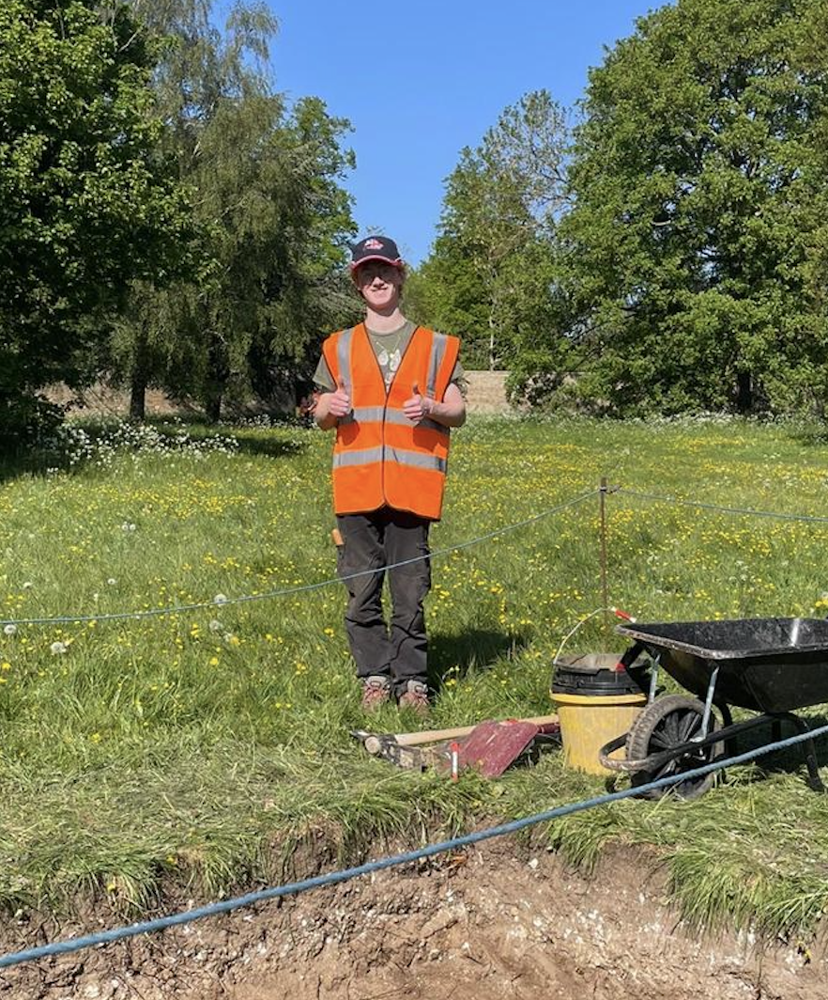
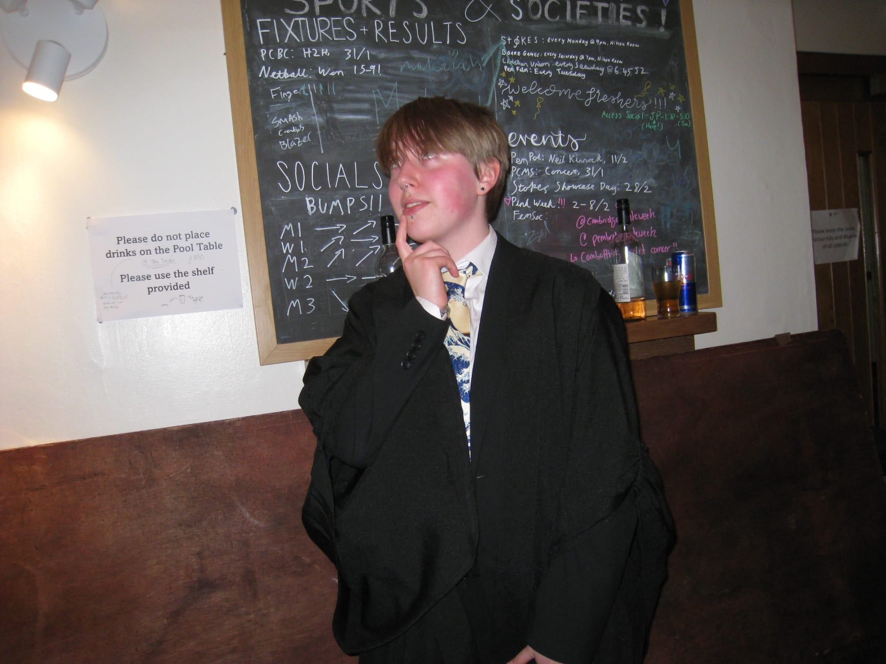
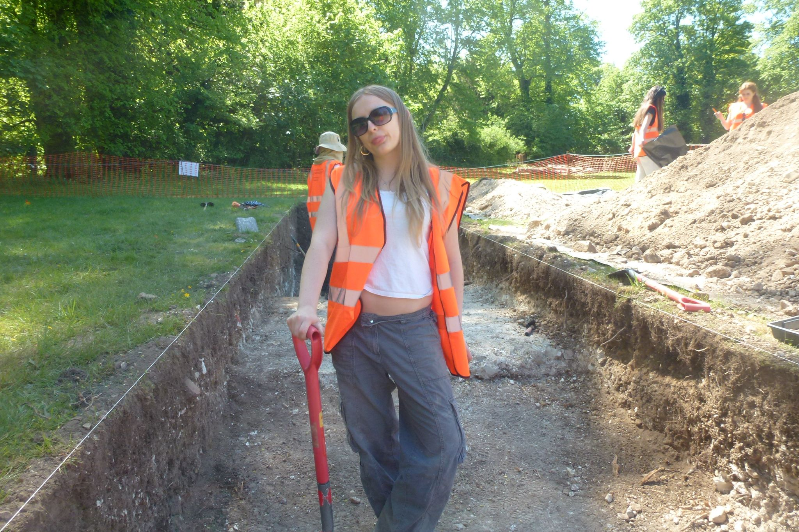
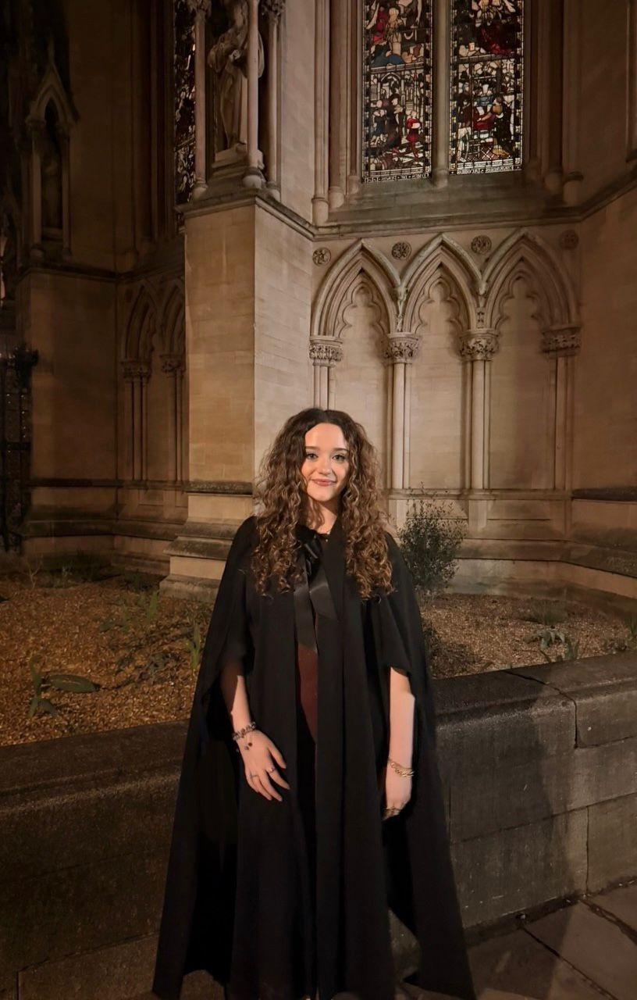
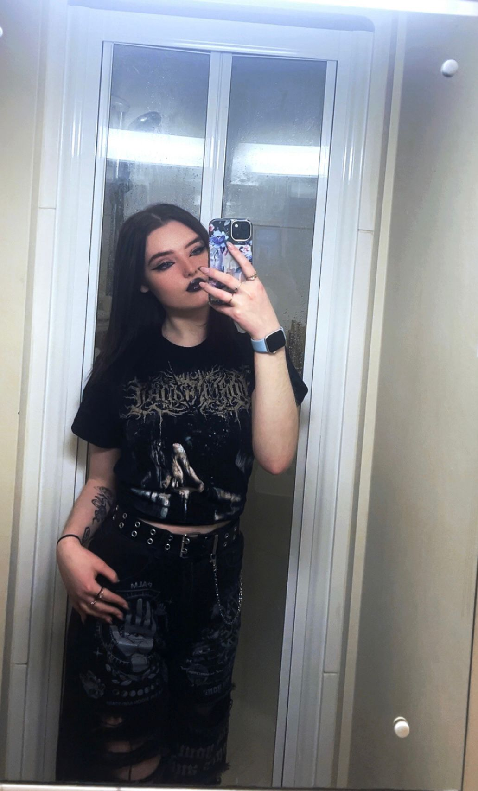
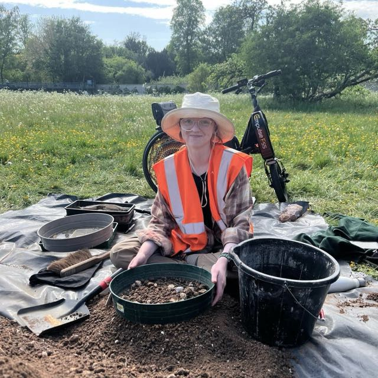

This Year's Committee

Ellie
PresidentRead bio
Hi, I'm Ellie, the new AFC president! I'm a second year on joint bio anth and archaeology, and I like Palaeolithic archaeology, and have been obsessed with Neanderthals for years. Outside of degree stuff I spend too much time in the theatre, and I enjoy handsewing historical costumes! I'm super excited to run the society this year, and hopefully bringing back in some fun new activities!

Anne-Marie Prest
Vice PresidentRead bio
Hello I'm Anne, first year archaeologist aiming to study Egyptology with a special interest in language and underwater archaeology. I am your new Vice-President and I aim to shake things up a bit here at the AFC and rally the troops by focusing more on outreach to our new members. I'm excited for the year to come and to meet everyone properly 😊

Zac
SecretaryRead bio
Hi, I'm Zac, the new AFC Secretary. I'm a first year Archaeologist at Emmanuel and I am currently interested in the development of trade and cultural exchange.

Nico
TreasurerRead bio
Hi I'm Nico, a first year archaeologist and your new treasurer! I love everything medieval and I can also talk about politics for hours. I'm involved in the Scottish Society and the Socialist Worker's Student Society in committee roles so hopefully I can pull on that experience this year :)

Becca
Social Media & StashRead bio
Hi I'm Becca, I'm a first year archaeologist, and I'm in charge of social media and stash this year! I loveeee monkeys 🙊 and everything to do with bio anth!

Imogen
Social SecretaryRead bio
Hey everyone!! I'm Imogen, one of the social secs for this year. I love Mesopotamian archaeology and the study of politics and heritage — but aside from that, I love visiting the pub with friends, good music and travelling the world! I'm so excited to be finishing my degree whilst sharing this role with Kira and organising fun events for you all.

Kira
Social SecretaryRead bio
Hi! I'm Kira, a Trinity second-year archaeologist, and joint social sec with Imogen :) My main archaeological interest is Ancient Egyptian society, especially regarding their religious and burial practices. More personally, I am a huge fan of metal music! I'm president of the Heavy Metal Society and lead vocalist in our student band, Jobless. I also love horror movies, especially the Terrifier franchise! I look forward to working within the AFC and meeting new people in archaeology :)

El
Welfare OfficerRead bio
Hello :) I'm El, I'm just about to start my second year studying archaeology and I am excited to be your next AFC Welfare Officer! My interests include all things ancient pottery, archaeobotany and illustration. Academics aside, I am also passionate about accessibility and student support within the AFC, department and beyond. I look forward to working with the rest of the AFC committee to provide access information for events and address any welfare concerns or queries you may have.